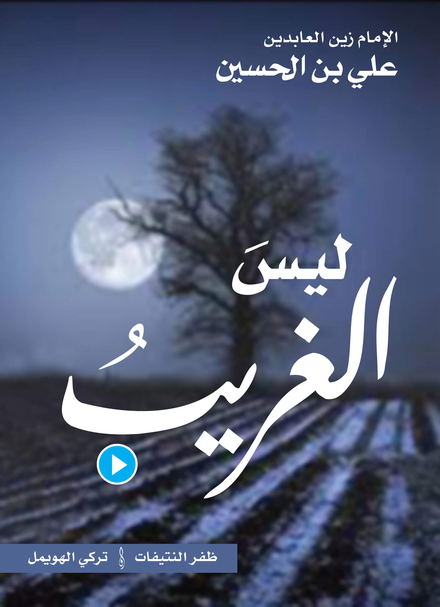

<audio id="poem" src="poem.mp3" preload="auto"></audio>


<script>

  function poem() {
        var audio = document.getElementById("poem");

        if (audio.duration > 0 && !audio.paused) {
            audio.pause();
            audio.currentTime = 0;
        } else {
            audio.play();
        }
    }
</script>


<map name="image-map">
  
  
    <area target="_blank" alt="" title="" href="" onclick="javascript:poem(); return false;"coords="469,1859,104" shape="circle">
  
  
  
  <area target="" alt="" title="" href="https://twitter.com/abjadi2020" coords="401,919,554,1038" shape="rect">
  
  
</map>

